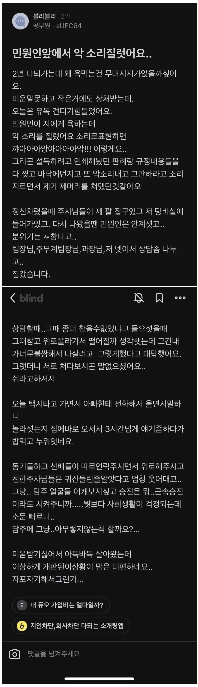

살아야한다

살아야한다
어차피 철밥통인데 똑같이 ㅈ같이 할수는 없는건가
민원을 안받는 공무원은 천하무적의 가장 무서운존재로 변신함
참고로 청송제2교도소는 제소자들 민원이
안통하게 되어있음
그게 바로 법원 공무원
철밥통도 사람이고 맞으면 아파
한다리 건너서 아시는분인데 40대 공무원 임
집안은 잘살음 부인이랑 가족한테 그만두면 안될까
자주물어봄 안된다 그나이에 안정적인 공무원 그만두고
뭘할건데 이말만 하니깐 더이상 말안함
아주 긴 명절연휴 마지막날 베란다 어서 목을맴
가족이 죽인거네 평생 죄책감에 시달렸음 좋겠다
집안이 잘살아서 사실 그만둬도 돈문제는 없는데
남의시선이 두려웠겠지.....
그깟 시선이 뭐가 문제일까 모르겠다 진짜
사람의 말과 시선에는 힘이 있다
겪어보기전에는 실감하기 힘들지
댓글로 좆같은 억까 당하고 비추가 쌓여도 한참을 기분이 좆같은데
실제로 저능아 같은 새끼들이 꽤엑거리는걸 계속 일상처럼 들어봐라
사람이 맛이가지 저 사람이 뭐 그런 하찮은거 겪고서 귀중한 목숨을 버렸을까
ㄹㅇ 정말 일하다보면 이게 같은 사람인가 싶은 새끼들 많음
모르면 배워. 눈치도 없는 새야, 그러니 남의 시선도 못 느끼고 살지. 진짜까지 붙일 정도로 넌 찐이다.
다른 댓은 내가 병신소리 했나보다 하고 반성했는데 너는 틀내나서 괜히 좆같네 꺼져 병신아 존나 힘들어 뒤지겠는데 시선이 어쩌구 신경쓸 때인가 싶어서 말한건데 뭘 씨발놈이 모르면 배워 이지랄
ㄹㅇ 뭘 배워 배우긴 ㅋㅋ
댓글도 존나 기괴하네 남의 집 사정도 모르면서 함부로 아가리 놀리는 수준 진짜ㅋㅋㅋ
아니 가족 책임은 20프로 미만임
누가 뭐래도 민원을 가장한 한국 개돼지 국민들이 살해한거임
근데 아시는 분은 너를 높이는 거라 아는 분이라고 해야 맞아..
이런 상황에서까지 그런 지적은 아니라고 봄
메시지의 내용이 중요한거지
아으아......
아고 ㅜㅜ
쎄게 나가야 된다
동료들 사이에 이야깃거리는 되겠지만 다들 웬만큼 이해할듯
철밥통이라고 할일 안하고 개짓거리 하지말고
차라리 밥통 휘둘러서 사람 아닌 새끼들 민원은 시원하게 시발아 박아야
정치쟁이 새끼들이 살인자나 다름없음
책임감이라고는 좆또 없이 아가리로만 착한척 개소리 지껄이는 역겨운 정치쟁이들 다 죽어버려야함
병원가라
이게 진짜 어려운게
상식인 공무원 + 상식인 민원인 = 정상 행정
꼴통 공무원 + 상식인 민원인 = 될것도 안됨
상식인 공무원 + 꼴통 민원인 = 안될것 될때까지 반복
과거엔 꼴공 + 상민 조합이 많아서 민원 넣게 만들었는데
현대는 상공 + 꼴민 조합이 많아져서 빡시지
이게 다 손님은 왕이다, 직장 내 상명하복 이 2가지 시민의식에서 비롯된거임
사람 대 사람이 아니라 윗사람 대 아랫사람으로 대해서 이런 일이 벌어지는것
직장 내 윗사람이 싸가지없이 굴어서 반박하면 아무리 그래도 윗사람한테.. 식으로 사무실 분위기가 흘러가는 것처럼 공무원들도 민원인이 진상부려도 웬만한거 아니면 참아야되는게 미덕으로 되버린거임
근데 그정도 수준 일하라고 앉혀놓은거긴함 ㅠㅠ
고귀하고 좋은 일 하려면 좀 더 많은 노력이 필요함 ㅠㅠ
비상식적인 인간은 어느 영역에나 있음
심지어 판사한테도 무논리로 징짜는 사람이나 변호사한테 구라치고 협박하는 사람도 있음
그냥 대한민국이 비상식적인 사람에 단호하게 대응하지 못하는 사회가 된 게 문제임
ㅠㅠ 흐잉
딴 사람들과 결이 안맞아서 사는게 얼마나 애달플까ㅠㅠ 힘내라 짜식..
개병신들은 인간 취급 안할 수 있게 해줘야 하는데
직장 동료도 통쾌해하지 않으려나 ㅋㅋ
진짜 잘했다 힘들땐 힘든거 표현해야해 억지로 참으면 언젠가 큰일난다